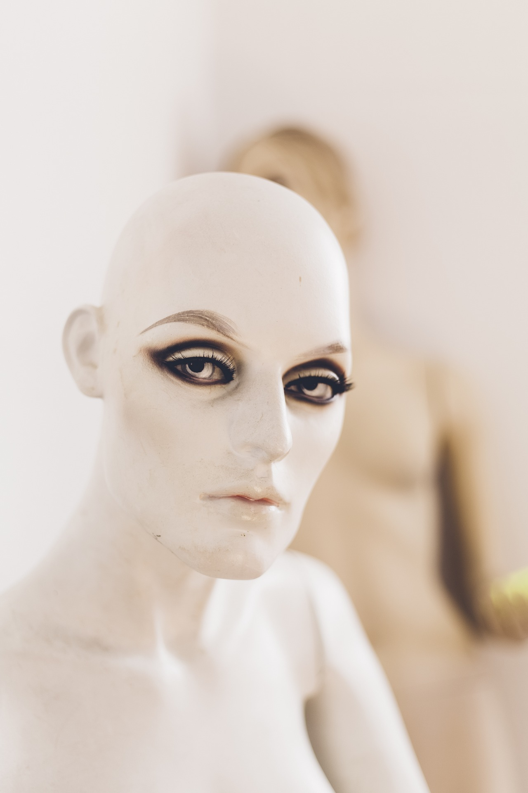

一致させてはいけない認識
蝶を捕まえようとする少女が「それは蛾だよ」と言われる。
まるで捕まえてはいけないもののように。
似ているが正反対のように扱われるもの、
これが気持ち悪いものの共通点である。
好ましいものと思い接近したが、
遠ざけなければならないものであることに
気付き一歩下がる。
例えば死体。論を俟たず。

人形だって気持ち悪い。
生きていると思えるようなリアルなものは特に。
話しかけても応答しない、動かない。
急遽、捉え直しを迫られる。
安定していたものが崩れ、
不気味の谷で、
不安へと落とされる。
蝙蝠は燕ではなかったから気持ち悪い。
僕自身は蝙蝠を気持ち悪いとは思わないが、
燕だと思って近づいたそれが、蝙蝠だとわかったらぎょっとするだろう。
蝙蝠だけなら気持ち悪くないはずなのに。
普段意識していなくても
文化的に生きるために頭を切り替えて処理しなければならないことは数多い。
遺体を人肉と呼ぶのは気持ち悪いし、
牛肉を牛の死体と呼ぶのは気持ち悪い。
"気持ち悪いもの"は無意識から引きずり出されたものだ。
抑圧の強い文化ほど気持ち悪さを感じる度合いも増すのかもしれない。
蛾は蝶と区別されていない文化圏において、
日本ほどに恐れられることがない。
似ているが異なった属性を持つものには特別気を払わなければならない。
もし間違えたら？
その不安。それが忌避に繋がる。
一度それとして飲み込んだものが喉元でそれでないとわかれば、
吐き出さざるを得ない。
それが吐き気だ。
偽善者。
ある種の音楽、ある種のファッション。
愛と性。
同性愛。近親相姦。
鶏肉ではなく蛙肉。
下痢と食事。
あなたが気持ち悪いと感じるものは何と似ているのだろう？
「カレー食べてる時にうんこの話するなよ！」
（間違って食べたらどうするんだよ？）